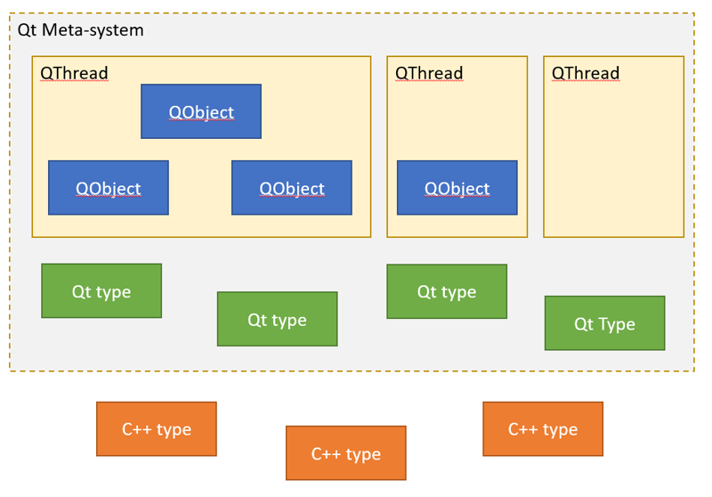
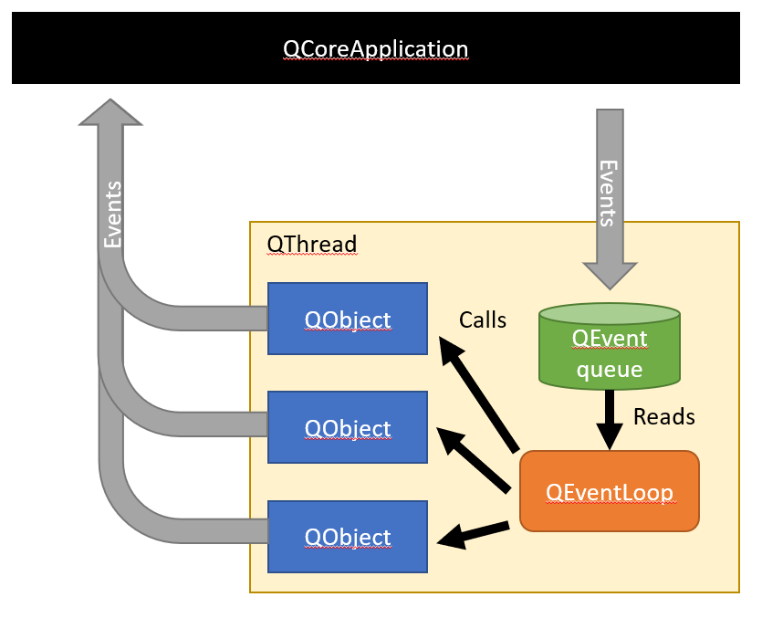
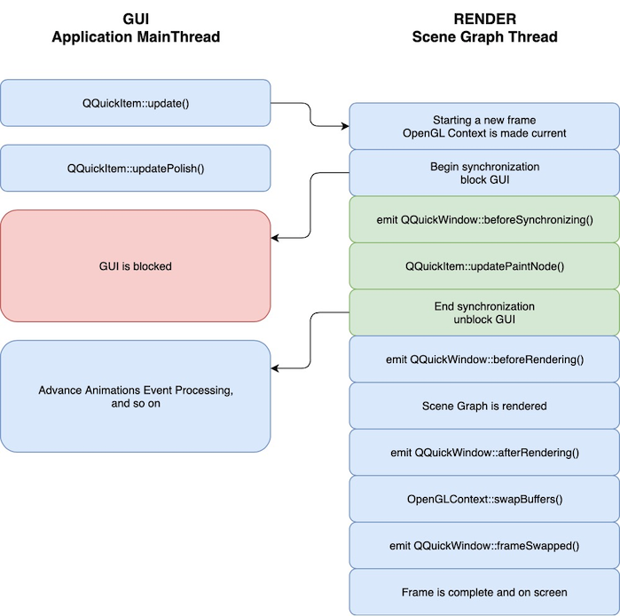

Qt — чрезвычайно мощный и удобный фреймворк для C++. Но у этого удобства есть и обратная сторона: довольно много вещей в Qt происходят скрыто от пользователя. В большинстве случаев соответствующая функциональность в Qt «магически» работает и это приучает пользователя просто принимать эту магию как данность. Однако когда магия все же ломается то распознать и решить неожиданно возникшую на ровном казалось бы месте проблему оказывается чрезвычайно сложно.
Эта статья — попытка систематизации того как в Qt «под капотом» реализована работа с потоками и о некотором количестве неочевидных подводных камней связанных с ограничениями этой модели.
Давайте начнем с основ. В Qt любые объекты способные работать с сигналами и слотами является наследниками класса QObject. Эти объекты by design являются некопируемыми и логически представляют из себя некоторые индивидуальные сущности которые «разговаривают» друг с другом — реагируют на те или иные события и могут сами генерировать события. Если говорить другими словами, то QObject в Qt реализует паттерн Actors. При правильной реализации любая программа на Qt по сути представляет из себя не более чем сеть взаимодействующих между собой QObject в которых «живет» вся программная логика.
Помимо набора QObject-ов, программа на Qt может включать в себя объекты с данными. Эти объекты не могут генерировать и принимать сигналы, но могут копироваться. К примеру можно сравнить между собой QStringList и QStringListModel. Один из них является QObject и не копируем, но может напрямую взаимодействовать с UI-объектами, другой — это обычный копируемый контейнер для данных. В свою очередь объекты с данными делятся на «Qt Meta-types» и все остальные. К примеру QStringList — это Qt Meta-type, а std::list<std::string> (без дополнительных телодвижений) — нет. Первые могут использоваться в любом Qt-шном контексте (передаваться через сигналы, лежать в QVariant и т.д.), но требуют специальной процедуры регистрации и наличия у класса публичных деструктора, конструктора копирования и конструктора по умолчанию. Вторые — это произвольные С++-типы.
Итак, у нас есть условные «данные» и есть условый «код» который с ними работает. Но кто на самом деле будет выполнять этот код? В модели Qt ответ на этот вопрос задается явным образом: каждый QObject строго привязан к какому-то потоку QThread который, собственно, и занимается обслуживанием слотов и прочих событий данного объекта. Один поток может обслуживать сразу множество QObject или вообще ни одного, а вот QObject всегда имеет родительский поток и он всегда ровно один. По сути можно считать что каждый QThread «владеет» каким-то набором QObject. В терминологии Qt это называется Thread Affinity. Попробуем для наглядности визуализировать:

Внутри каждого QThread спрятана очередь сообщений адресованных к объектам которыми данный QThread «владеет». В модели Qt предполагается что если мы хотим чтобы QObject сделал какое-либо действие, то мы «посылаем» данному QObject сообщение QEvent:
QCoreApplication::postEvent(QObject *receiver, QEvent *event, int priority);
В этом потоково-безопасном вызове Qt находит QThread которому принадлежит объект receiver, записывает QEvent в очередь сообщений этого потока и при необходимости «будит» этот поток. При этом ожидается что код работающий в данном QThread в какой-то момент после этого прочитает сообщение из очереди и выполнит соответствующее действие. Чтобы это действительно произошло, код в QThread должен войти в цикл обработки событий QEventLoop, создав соответствующий объект и позвав у него либо метод exec(), либо метод processEvents(). Первый вариант входит в бесконечный цикл обработки сообщений (до получения QEventLoop события quit() ), второй ограничивается тем что обрабатывает сообщения ранее накопившиеся в очереди.

Легко видеть что события для всех объектов принадлежащих одному потоку обрабатываются последовательно. Если обработка какого-то события потоком займет много времени, то все остальные объекты окажутся «заморожены» — их события будут накапливаться в очереди потока, но не будут обрабатываться. Чтобы этого не происходило в Qt предусмотрена возможность cooperative multitasking — обработчики событий в любом месте могут «временно прерваться», создав новый QEventLoop и передав в него управление. Поскольку обработчик события до этого тоже был вызван из QEventLoop в потоке при подобном подходе формируется цепочка «вложенных» друг в друга event loop-ов.
Пара слов о Event Dispatcher
Строго говоря, QEventLoop — это не более чем удобная пользовательская обертка над более низкоуровневым системо-зависимым примитивом который называется Event Dispatcher и реализует интерфейс QAbstractEventDispatcher. Реальный сбор и обработку событий выполняет именно он. У потока может быть только один QAbstractEventDispatcher и устанавливается он лишь однажды. В числе прочего начиная с Qt5 это позволяет при необходимости легко заменить диспетчер на более подходящий добавив всего 1 строчку в инициализацию потока и не трогая потенциально многочисленные места где используется QEventLoop.
Что входит в понятие «события» обрабатываемого в подобном цикле? Хорошо знакомые всем Qt-шникам «сигналы» — это лишь один из частных примеров, QEvent::MetaCall. Подобный QEvent хранит в себе указатель на информацию необходимую для идентификации функции (слота) которую нужно позвать и ее аргументов. Однако помимо сигналов в Qt существует еще порядка сотни (!) других событий, из которых десяток зарезервирован за специальными Qt-шными событиями (ChildAdded, DeferredDelete, ParentChange) а остальные соответствуют различным сообщениям от операционной системы.
Зачем их так много и почему нельзя было обойтись просто сигналами?
У читателя может возникнуть вопрос: а зачем вообще событий так много и почему нельзя было обойтись просто одним удобным и универсальным механизмом сигналов? Дело в том что разные сигналы могут обрабатываться сильно по-разному. К примеру часть сигналов является compressible — если в очереди уже есть одно необработанное сообщение данного типа (скажем QEvent::Paint), то последующие сообщения просто модифицируют его. Другие сигналы могут быть отфильтрованы (filtered out). Наличие небольшого количества стандартных и легко идентифицируемых QEvent заметно упрощает соответствующую обработку. Кроме того обработка QEvent за счет заметно более простого устройства как правило осуществляется несколько быстрее обработки аналогичного сигнала.
Одним из неочевидных подводных камней здесь является то что в Qt у потока, вообще говоря, может вообще не быть Dispatcher-а и соответственно ни одного EventLoop-а. Объекты принадлежащие этому потоку не будут реагировать на посылаемые им события. Поскольку QThread::run() по умолчанию вызывает QThread::exec() внутри которого как раз реализован стандартный EventLoop, то с этой проблемой часто сталкиваются те кто пытается определить свою собственную версию run() отнаследовавшись от QThread-а. Подобный вариант использования QThread в принципе вполне валиден и даже рекомендуется в документации, но идет вразрез с общей идеей организации кода в Qt описанной выше и частенько работает не так как ожидают того пользователи. Характерной ошибкой при этом является попытка останавливать подобный кастомный QThread путем вызова QThread::exit() или quit(). Обе эти функции направляют сообщение в QEventLoop, но если в потоке этого QEventLoop просто нет, то и обрабатывать их, естественно, некому. В результате неопытные пользователи пытаясь «починить неработающий класс» начинают пытаться использовать «работающий» QThread::terminate, чего делать категорически нельзя. Имейте в виду — в случае если Вы переопределяете run() и не используете стандартный event loop, то механизм выхода из потока придется предусмотреть самостоятельно — к примеру воспользовавшись специально добавленной для этого функцией QThread::requestInterruption(). Правильнее, впрочем, просто не наследоваться от QThread если Вы не собираетесь действительно реализовывать какую-то специальную новую разновидность потоков и либо использовать специально созданный для подобных сценариев QtConcurrent, либо поместить логику в специальный Worker Object отнаследованный от QObject, поместить последний в стандартный QThread и управлять Worker-ом с помощью сигналов.
Итак, как мы уже разобрались, каждый объект в Qt «принадлежит» какому-то потоку. При этом встает закономерный вопрос: а какому, собственно говоря, именно? В Qt приняты следующие два соглашения:
1. Все «дети» любого «родителя» всегда живут в том же потоке что и родительский объект
Это пожалуй самое сильное ограничение потоковой модели Qt и попытки его нарушить нередко дают весьма странные для пользователя результаты. К примеру попытка сделать setParent к объекту живущему в другом потоке в Qt просто молча фейлится (в консоль пишется предупреждение). На этот компромисс по всей видимости пошли из-за того что потоковобезопасное удаление «детей» при гибели живущего в другом потоке родителя является очень нетривиальной и склонной к трудно отлавливаемым багам проблемой. Хотите реализовывать иерархию взаимодействующих объектов живущих в разных потоках — придется организовывать удаление самостоятельно.
2. Объект у которого при создании не указан родитель живет в потоке который его создал
Тут все одновременно и просто и в то же время не всегда очевидно. К примеру в силу этого правила QThread (как объект) живет в другом потоке чем собственно тот поток который он контролирует (и в силу правила 1 не может владеть ни одним из объектов созданных в этом потоке). Или, скажем, если Вы переопределите QThread::run и будете внутри создавать какие-либо наследники QObject, то без принятия специальных мер (как разбиралось в предыдущей главе) созданные объекты не будут реагировать на сигналы.
Thread affinity при необходимости можно менять вызовом QObject::moveToThread. В силу правила 1, перемещать можно только верхнеуровневых «родителей» (у которых parent==null), попытка переместить любого «ребенка» будет молча проигнорирована. При перемещении верхнеуровневого «родителя» все его «дети» тоже переедут в новый поток. Любопытно что вызов moveToThread(nullptr) тоже легален и является способом создать объект с «null»-овой thread affinity; подобные объекты не могут получать никаких сообщений.
Получить «текущий» поток исполнения можно через вызов функции QThread::currentThread(), поток с которым ассоциирован объект — через вызов QObject::thread()
Интересный вопрос на внимательность
Заметим что реализация функционала владения объектами и хранения адресованных им QEvent-ов, очевидно, требует у потока где-то хранить соответствующие данные. В случае с Qt выделением и менеджментом таковых данных как правило занимается базовый класс QThread. Но что будет если создать QObject в каком-нибудь std::thread или позвать из этого потока функцию QThread::currentThread()? Оказывается что в этом случае Qt неявным образом «за сценой» создаст специальный невладеющий объект-обертку QAdoptedThread. На пользователя при этом возлагается обязанность самостоятельно следить за тем чтобы все объекты в таком потоке были удалены раньше, чем будет остановлен породивший их поток.
Среди всех потоков Qt обязательно выделяет один «главный» (main thread), который в случае с UI-приложениями так же становится GUI thread. В этом потоке живет объект QApplication (QCoreApplication / QGuiApplication) который обслуживает основной event loop ориентированный на работу с сообщениями от операционной системы. В силу правила №2 из предыдущего раздела на практике «главным» станет тот поток, который собственно создал объект QApplication, а поскольку во многих операционных системах «главный поток» имеет специальное значение, то документация настоятельно рекомендует создавать QApplication самым-самый первым объектом во всей Qt программе и делать это сразу же после старта приложения (== внутри первого потока в процессе). Для получения указателя на главный поток приложения соответственно можно воспользоваться конструкцией вида QCoreApplication::instance()->thread(). Впрочем чисто технически QApplication можно повесить и на не-main()-поток, к примеру если Qt интерфейс создается внутри какого-нибудь плагина и во многих случаях это будет нормально работать.
В силу правила «созданные объекты наследуют текущий поток», Вы всегда можете спокойно работать не выходя за пределы одного потока. Все созданные объекты автоматически попадут на обслуживание в «главный» поток, где всегда будет event loop и (по причине отсутствия других потоков) никогда не будет проблем с синхронизацией. Даже если Вы работаете с более сложной системой, требующей многопоточности, то в основной поток скорее всего попадет большинство объектов, за исключением тех немногих которые явным образом будут размещены где-то еще. Возможно именно это обстоятельство и порождает кажущуюся «магию» в которой объекты кажутся безо всяких усилий работающими независимо друг от друга (ибо в пределах потока реализуется cooperative multitasking) и при этом не требующими синхронизации, блокировок и тому подобных вещей (ибо все происходит в одном потоке).
Помимо того что «главный» поток является «первым» и содержит в себе основной цикл обработки событий QCoreApplication, еще одним характерным для Qt ограничением является то что в этом потоке должны «жить» все объекты связанные с GUI. Отчасти это является следствием легаси: в силу того что в ряде операционных систем любые операции с GUI могут происходить только в главном потоке, Qt подразделяет все объекты на «виджеты» и «не-виджеты». Widget-type object может жить только в главном потоке, попытка «перевесить» такой объект в любой другой автоматически зафейлится. В силу этого даже существует специальный метод QObject::isWidgetType(), отражающий довольно глубокие внутренние различия в механике работы потоков с такими объектами. Но интересно что и в намного более новом QtQuick, где от костыля с isWidgetType попытались уйти осталась та же самая проблема
В чем же дело? В Qt5 QML-объекты больше не являются виджетами а их рендеринг может происходить в отдельном потоке. Но это привело к другой проблеме — сложностям синхронизации. Отрисовка объектов UI является «чтением» их состояния и должна происходить консистентно: если мы попытаемся изменить состояние объекта одновременно с его отрисовкой, то результат полученной «гонки» может нас не обрадовать. Кроме того OpenGL вокруг которого построена «новая» графика Qt крайне сильно «заточен» на то что формирование команд на отрисовку проводит один поток, работающий с некоторым глобальным состоянием -«графическим контекстом» который может меняться только в виде серии последовательных операций. Мы просто не можем одновременно отрисовывать на экране два разных графических объекта — они всегда будут рисоваться последовательно один за другим. В результате мы возвращаемся обратно к тому же самому решению — отрисовка UI оказывается возложена на один поток. Внимательный читатель, впрочем, заметит что этот поток не обязательно должен быть main thread — и в Qt5 фрейморк действительно попытается задействовать для этого отдельный Rendering thread
В рамках новой модели Qt5 вся отрисовка объектов происходит в специально выделенном для этого потоке, rendering thread. При этом чтобы это имело смысл и не ограничивалось простым переходом от одного «главного» потока к другому, объекты неявно делятся на «фронт-енд» который видит программист и обычно скрытый от него «бэк-энд» который собственно осуществляет реальную отрисовку. Бэк-энд живет в rendering thread, тогда как фронт-энд, чисто теоретически, может жить в любом другом потоке. Предполагается что полезную работу (если таковая есть) в виде обработки событий выполняет именно фронт-енд тогда как функция бэка ограничена только рендерингом. В теории таким образом получается win-win: бэк периодически «опрашивает» текущее состояние объектов и отрисовывает их на экране, при этом его не может «остановить» то что какой-то из объектов слишком сильно «задумался» обрабатывая событие в силу того что эта медленная обработка происходит в другом потоке. В свою очередь потоку объекта нет нужды дожидаться «ответов» от графического драйвера подтвеждающих завершение отрисовки и разные объекты могут работать в разных потоках.
Но как я уже упомянул в предыдущей главе, раз у нас есть поток «создающий» данные («фронт») и поток который их читает («бэк»), то нам необходимо как-то обеспечивать их синхронизацию. Эта синхронизация в Qt делается блокировками. Поток где живет «фронт» временно приостанавливается, после чего следует специальный вызов функции (QQuickItem::updatePaintNode(), QQuickFramebufferObject::Renderer::synchronize() ) единственной задачей которого является копирование релевантного для визуализации состояния объекта из «фронта» в «бэк». При этом вызов такой функции происходит внутри rendering thread, но благодаря тому что поток где живет объект в этот момент остановлен, пользователь может свободно работать с данными объекта так, как если бы это происходило «как обычно», внутри потока которому принадлежит объект.
Все хорошо, все отлично? К сожалению нет, и здесь начинаются достаточно неочевидные моменты. Если мы будем брать для каждого объекта блокировку по отдельности, то это будет довольно медленно поскольку rendering thread будет вынужден ждать пока эти объекты завершат обработку своих событий. «Повиснет» поток где живет объект — «повиснет» и рендеринг. Вдобавок станет возможен «рассинхрон» когда при одновременном изменении двух объектов один успеет отрисоваться еще в кадре N а другой будет отрисован только в кадре N+1. Предпочтительнее было бы брать блокировку лишь один раз и на все объекты сразу и лишь тогда когда мы уверены что эта блокировка будет успешной.
Что было реализовано для решения этой проблемы в Qt? Во-первых было принято решение что все «графические» объекты одного окна будут жить в одном потоке. Таким образом для отрисовки окна и взятия блокировки на все содержащиеся в нем объекты становится достаточно остановить один этот поток. Во-вторых блокировку для обновления бэк-энда инициирует сам же поток с UI-объектами, посылая сообщение rendering thread о необходимости провести синхронизацию и останавливая сам себя (QSGThreadedRenderLoop::polishAndSync если кому интересно). Это гарантирует что rendering thread никогда не будет «ждать» поток с «фронт-ендом». Если тот вдруг «зависнет» — rendering thread просто продолжит отрисовывать «старое» состояние объектов, не получая сообщений о необходимости обновиться. Это правда порождает довольно забавные баги вида «если рендеринг по какой-то причине не может отрисовать окно сразу, то главный поток зависает», но в целом является разумным компромиссом. Начиная c QtQuick 2.0 ряд «анимационных» объектов можно даже «поселить» имено в render thread чтобы анимация могла тоже продолжать работать если основной поток «задумался».

Однако практическим следствием этого решения является то что все UI-объекты в любом случае должны жить в одном и том же потоке. В случае со старыми виджетами — в «главном» потоке, в случае с новыми Qt Quick-объектами — в потоке объекта QQuickWindow который ими «владеет». Последнее правило довольно изящно обыграно — для того чтобы нарисовать QQuickItem ему нужно сделать setParent к соответствующему QQuickWindow что как уже обсуждалось гарантирует что объект или переедет в соответствующий поток или вызов setParent провалится.
А теперь, увы, ложка дегтя: хотя разные QQuickWindow чисто теоретически могли бы жить в разных потоках, на практике это требует аккуратной пересылки им сообщений от операционной системы и в Qt сегодня таковая не реализована. В Qt 5.13 к примеру QCoreApplication пытается общаться с QQuickWindow через sendEvent требующий чтобы получатель и посылатель были в одном потоке (вместо postEvent который допускает чтобы потоки были разными). Поэтому на практике QQuickWindow правильно работают только в GUI-потоке и как следствие все QtQuick-объекты живут там же. В результате несмотря на наличие rendering thread практически все доступные пользователю объекты связанные с GUI по-прежнему обитают в одном и том же GUI thread. Возможно это изменится в Qt 6.
Помимо вышесказанного стоит так же помнить что поскольку Qt работает на множестве разных платформ (включая те в которых не поддерживается многопоточность), то в фреймворке предусмотрено приличное количество fallback-ов и в некоторых случаях функциональность rendering thread в реальности выполняется тем же самым gui thread-ом. В этом случае весь UI включая рендеринг живет в одном потоке и проблема синхронизации автоматически отпадает. Аналогично обстоят дела и с более старым, Qt4-style UI на основе виджетов. При большом желании можно заставить Qt работать в таком «однопоточном» режиме с помощью установки переменной окружения QSG_RENDER_LOOP в соответвующий вариант.
Qt — огромный и сложный фреймворк и работа с потоками в нем отражает часть этой сложности. Но спроектирован он очень аккуратно, логично и грамотно, так что при понимании нескольких ключевых идей с потоками в Qt довольно просто работать не допуская ошибок.
Напомню еще раз основные моменты;
Надеюсь что это поможет Вам эффективнее использовать Qt и не совершать ошибок связанных с его многопоточной моделью